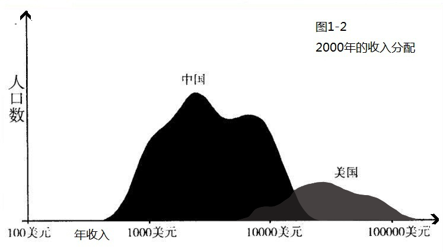
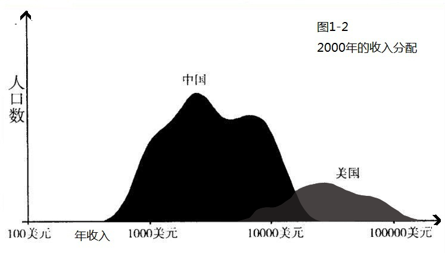

附文：中国的收入和财富分配走向何处去
中国的收入和财富的分配问题是一个让我很担心的问题。担心的原因不仅仅在于收入差距和财富差距本身，尽管从社会公正的角度说，这是一个重大课题。我的担心更在于人们对于此事的接受程度、认同程度和对其背后原因的认识。同样的分配差距，在有的国家穷人和富人可以相安无事，换了另一个国家，则有可能会激发社会动荡。因为这在很大程度上，不是取决于客观的分配不均程度，而取决于人们心理上能够接受的分配不均程度和导致分配不均的原因。
中国自古以来就有“不患寡而患不均”的提法，对平均分配的认可也许可以算是深入中国传统的东西。只是，农耕社会的不均和现代工业社会的不均有着十分不同的意味。农耕社会的生产力极度低下，即便生产力稍有增长使得农业产出增加，最后也会转化为人口的增长，并导致在人均的意义上并没有变化，这就是所谓的马尔萨斯陷阱。这一陷阱的结果是，在数千年的时间里，中国也好，西欧也罢，绝大多数人口都生活在温饱的边缘。在那样的情形下，不均的分配直接意味着有些人会吃不饱饭、穿不暖衣，这是一个生存问题。追求平均分配，与其说是为了更理想的社会，不如说是一种生存法则。而进入工业社会之后，人类终于走出了马尔萨斯陷阱，进入了现代经济增长的时代。生产力以几何速度提高，而人口出生率则显著下降，人类社会终于在真正意义上实现了大量的剩余。分配不均在多数情况下已不再涉及生存问题。相反，对财富和社会地位的追求，在一定程度上反而成为推动社会进步的动力。中国自己就是一个很好的例子。实行平均主义年代的中国，经济远没有后来市场经济年代有活力，吃大锅饭的劳动者的积极性也远没有后来按劳取酬的劳动者积极性大。从某种意义上说，分配不均几乎是现代市场经济的一个必然产物，因为市场本身就是一个能者多得、适者生存的地方。
我感觉很多人对中国收入分配问题的状况和成因在认识上存在偏差，有的人可能过于简单地把分配不均归于官僚、腐败和制度因素。诚然，这些都是存在的，但恐怕并不是分配不均问题背后唯一的因素，甚至不是最主要的因素。我不是研究收入分配或者财富分配的学者，因此我个人的认识很可能也存在偏差，不过我觉得，有些简单的事实还是比较值得注意的。特别声明一下，我下面要说的“事实”未必是真正的事实，因为收入分配和财富分配的数据极难获得，特别是在中国这样的国家。因此这些“事实”或许都存在商榷的余地。有的人可能觉得这里的“事实”和他个人的主观感受完全不一样，这很自然。不过我想说，主观的感觉并不比数据更靠谱，特别是那些经过严肃的研究人员仔细整理过的数据。
在摆事实之前还得说一下，收入分配和财富分配是两个截然不同的概念。收入分配是针对收入这样一个流量概念而言的。收入，通常指的是一个人在给定的时间里能挣多少钱，这里面包含工资、红利和其他各种现金流入。财富分配则是针对财富这样一个存量概念而言的。财富，通常指的是一个人在某个时点有多少财产，这里面包含现金、股票、房产和其他各种资产。通常，收入高的人财富可能也多，但这不是必然的，一个挥金如土的投资银行家可能有很高的收入却没有什么财富；同样，一个守财但无所事事的富家子弟，可以有很多的财富但却没有收入。
然后，我这里还选了一个参考国：美国。美国和中国很不一样，比如官僚体系相对清明，权钱交易受到比较大的约束；有真正的工会，各种劳工保护、环境保护和最低工资使得“赤裸裸的原始积累”不那么严重；没有太多国有企业；存在比较严格的反垄断法等。前面说的这些东西，被不少人当做中国收入分配差距拉大的主要原因。和美国比较，可以让人有个大致的概念，即便没有这些，也并不意味着收入和财富分配差距就一定会大。
下面的这两幅图来自哥伦比亚大学教授哈维尔•马丁在顶尖的英文经济学杂志 《经济学季刊》上的一篇论文。这位马丁教授，除了是个经济学教授外，更为人所知的身份恐怕还是巴塞罗那足球俱乐部经济委员会的主席。
 

图1-1显示的是中美两国在1980年时的收入分配情况，横轴是收入水平，纵轴是人数。这里的收入是用购买力平价衡量的，也就是剔除了价格差异后的收入水平，这样可以使不同国家之间的收入具有可比性。图中左边的是中国，右边的是美国。很明显，1980年的中国比那时的美国穷很多，中国绝大多数人口比美国最穷的人还要穷，这体现为左边的部分几乎和右边没有交集。那时，中国的收入分配差距也要比美国小很多，这体现为左边的分布比右边的分布“瘦”不少。图1-2是两国在2000年时的收入分配情况，从图中不难看出，中美的收入差距下降了很多。中国富裕人群的收入已经大致相当于美国中产阶层的水平。而中国的收入分配差距也拉大了很多，这表现为中国的分布变“肥”了不少。不过，还有一件事情是，中国分布的“肥”的程度和美国分布的“肥”的程度是大致相当的，也就是说中国收入分配的差距和美国是大致相当的。当然，这样用眼睛看的结果可能很不准确，不过，更精确的、用基尼系数衡量的中美收入分配差距也支持这一结论。
对这两幅图可以有很多不同的解读。我只想指出，中国改革开放之初高度平均的收入分配，很难说是一种常态的分配模式。事实上，那种分配方式很可能是畸形的。而随后收入分配差距的拉大，即便消除了很多令人诟病的问题，比如说腐败、缺少对劳动者权利的保护，还有垄断等，也没有消除得很彻底。有些现在看来不是可以完全消除的，甚至是完全不能消除的。没有那些问题，中国的收入分配可能会更公正、更反映一个人的贡献和能力，但未必会更平均。和中国有着截然不同的国情的美国，虽然不能算一个理想社会，但在不存在中国的那些问题的情况下，却仍然有着巨大的收入分配差距，恰恰说明了驱动收入分配差距的因素要远复杂于那些表面的东西。
无论收入分配的差距有多大，比起财富分配的差距，只能是小巫见大巫了。在中国，财富分配所引发的社会问题恐怕远多于收入分配。比如说，在对房价的激烈讨论中，很大的张力就来自对财富分配不均的不满，这里的财富指的是房产。有些人可以拥有好多房子，还可以通过房子来赚钱，有些人却连一套房子都没有。但这也不完全是中国特色，美国的财富分配差距恐怕更触目惊心。美国的一个消费金融普查里面提供了关于财富的数据，图1-3就是我根据相应的数据做出的。基本的结论是：财富分配极度不平等。
2004年，美国最富的1%的家庭拥有这个国家34.3%的财富，最富的5%的家庭合计拥有59%的财富，而最穷的40%的家庭则只拥有0.2%的财富。有一个所谓的20/80法则，这里就是一个实例：美国最富的20%的人拥有超过80%的财富，而剩下的80%的人只拥有不到20%的财富。要知道，美国的富人很多都是白手起家，最知名的那几个富豪，从盖茨、巴菲特到纽约市长彭博，各个都是如此。因此，这种财富分配的差距，恐怕不完全是分配制度的缺陷导致，也许这个世界本来就不公平。
对中国的财富分配状况，还没有很好的数据来反映。几年前我见到了对中国收入分配很有研究的李实教授，他告诉我中国的财富分配相对来说还算平均。但如果美国的数据透露了什么预言的话，那就是中国的财富分配极有可能会越来越不平均。即使没有巧取豪夺，没有权钱交易，也没有奸商恶霸，这种高度的分配不均也仍有可能出现。
因此，当我们讨论收入和财富分配不均的时候，更要关注的是消灭不合理、不合法的分配不均，而不是分配不均本身。而在分配不均难以避免时，出台保护低收入群体的公共政策就显得尤为必要和迫切了。